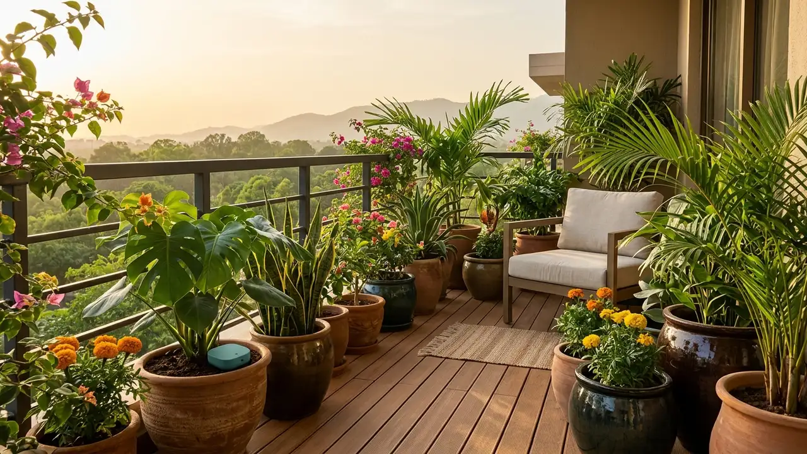
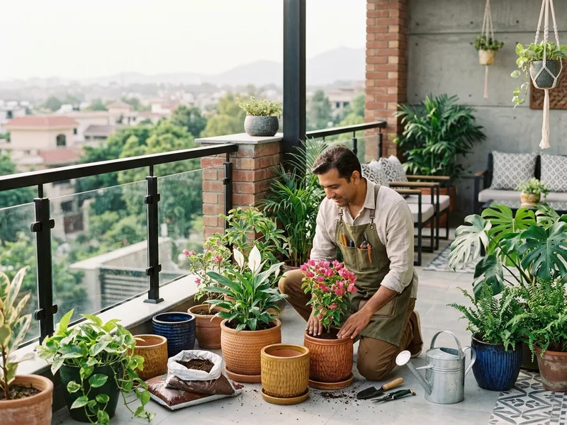
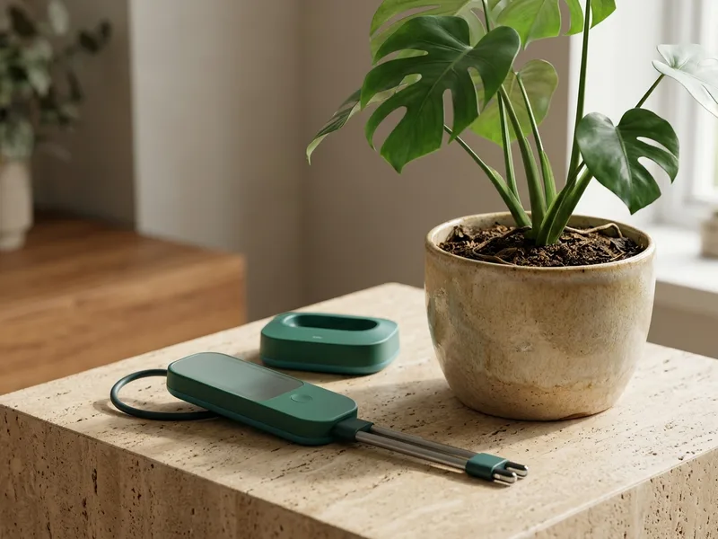
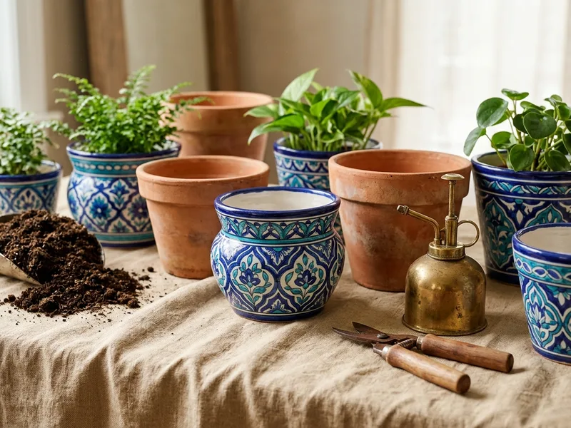
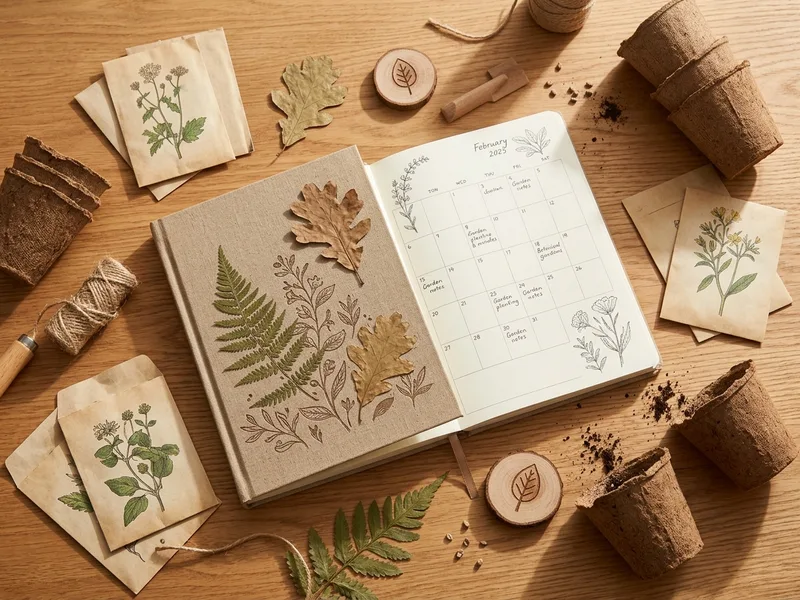
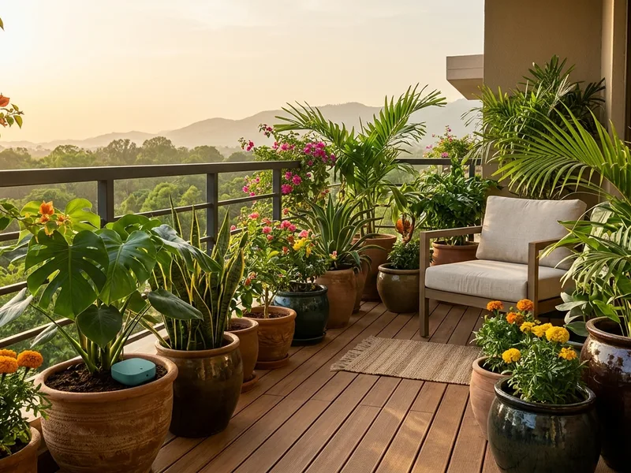

“We Will Plant for You” — Backed by Live Soil Telemetry.
Turnkey balcony & rooftop planting with wireless IoT soil sensors, crafted for Islamabad and Rawalpindi homes.

Shop by Category

On-Demand Planting
Turnkey balcony, rooftop & indoor setups

Smart Monitoring
Cellular/BLE moisture & pH sensor probes

Supplies & Planters
Multani blue pottery & Taxila clay cylinders

Learning & DIY
Sowing calendars & Seedistry seed vaults

Community & CSR
Native tree tokens & botanical hampers
Featured Services, IoT Probes & Planters
From Online Booking to On-Site Soil Telemetry
Choose Your Space
Select your balcony or terrace online. We evaluate Margalla sunlight, wind, and water quality.
Artisan Pots & Mix
Handmade Taxila terracotta paired with aerated, neem-enriched organic potting soil.
Turnkey On-Site Planting
Our vetted team delivers, pots, waters, and leaves your space completely clean.
Live Soil Telemetry
Wireless solar probes stream soil moisture and pH data with timely care notifications.
IoT Precision Sensor Architecture
Live Soil Moisture & Automatic Alerts
High-frequency capacitive probes measure root-zone moisture directly, eliminating watering guesswork.
IP67 Weather Resilience
Ultrasonically sealed solar enclosure. Survives 45°C Islamabad summers and heavy monsoon downpours.
Islamabad Alkaline Buffer
Twin-city water averages pH 7.8–8.2. Probes detect alkalinity drift before nutrient lockout occurs.
Cellular IoT & Bluetooth Proximity Sync
Streams directly to cloud or syncs with your phone over low-energy Bluetooth without complex Wi-Fi setups.
Taxila Terracotta & Multani Ceramics
Multani cobalt-glazed pottery and breathable Taxila red-clay planters crafted by regional master artisans.
Seedistry Clean Substrates
Neem cake, aerated coco-peat, and organic leaf mold formulated with Seedistry for resilient root growth.
Urban Reforestation
Every CSR token funds indigenous Margalla trees with verifiable GPS coordinates and survival monitoring.
Botanical Gift Guide & Hampers
Green Islamabad 60 — Spring & Monsoon Readiness
Our seasonal twin-city drive pairs turnkey balcony installations with free on-site soil diagnostics and community tree planting across Islamabad & Rawalpindi.
60 Native Trees Planted
- 01. Balcony & Terrace Booking: Reserve a planting slot with complimentary soil pH testing.
- 02. Native Tree Sponsorship: Fund geo-tagged Amaltas, Kachnar, and Chir Pine saplings.
- 03. Volunteer Community Drives: Join university teams in seasonal urban greening.
- 04. Long-Term Care Tracking: Monitor moisture depletion curves with telemetry alerts.
Transform your balcony or terrace into a thriving botanical retreat. Backed by vetted on-demand planting crews, authentic Multani pottery, and precision IoT soil sensors.